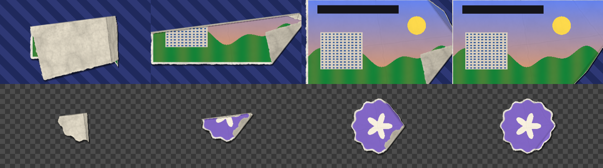

Effects > Open FX
Paper Cutout FX
Turns any clip, title, transparent PNG, or green-screen shot (with a built-in keyer) into an animated paper cutout with a torn cardstock border.

Organic stop-motion cutouts, torn cardstock borders, a paper fold-and-unfold transition, and real paper Foley sounds for DaVinci Resolve 20 and 21, without opening Fusion and without watermarks.
Drag Paper Cutout FX from Effects > Open FX onto your clips and the Paper Fold & Unfold transition from Open FX > Transitions onto your edit points, like any Resolve effect. Both run in multi-threaded C++17 (0 MB VRAM) without Fusion node-graph overhead.

Turns any clip, title, transparent PNG, or green-screen shot (with a built-in keyer) into an animated paper cutout with a torn cardstock border.
A transition that unfolds a clip from a folded paper packet or folds it away, with the paper back, staged creases, and a shadow.
Place Paper Fold & Unfold at the start or end of a cutout clip: it detects the cutout shape and keeps a single torn border.
Held frames, subtle position and rotation jitter, and a directional 3D drop shadow for a physical handmade finish.
Up to 4× faster per frame in Paper Cutout FX compared to version 3.1.0.
Grouped Inspector sections for both the Paper Cutout FX effect and the Paper Fold & Unfold transition.
| Section | What it does |
|---|---|
| 01Media Source & Placement | Frames the clip artwork inside the cutout with scale, position, and rotation. |
| 02Green Screen & Matte Cleanup | Extracts the subject from solid green or blue backdrops with spill suppression. |
| 03Torn Paper Cutout Border | Expands a procedural ragged cardstock collar around any alpha shape. |
| 04Paper Grain & Fold Creases | Adds multi-octave fiber grain and ridged fold creases. |
| 053D Drop Shadow | Soft directional depth shadows behind the cutout. |
| 06Stop-Motion & Master Transform | Quantizes motion into stepped holds (every 6 frames by default: a 4 fps look at 24 fps) and adds subtle tactile wobble. |
| 07Advanced | Closed by default: source mode (clip or built-in sticker), premultiplied alpha, fiber detail, grain and crease scale, and texture seed. |
| Section | What it does |
|---|---|
| 01Fold & Unfold | Picks Auto or manual fold/unfold action, crease layout (Craft Flaps, Map Grid, Accordion, Origami Corners), stage count (2 to 5), direction, 3D depth, and packet slide distance. |
| 02Paper Look | Optional torn cardstock collar while folded, paper back color and grain, and fold-line creases that settle away on the final frame. |
| 03Stop-Motion & Shadow | Held poses with hand jitter, a drop shadow under the packet, and directional flap lighting and shadows. |
Real-world stereo 48 kHz 24-bit WAV recordings in the public domain (CC0 / Public Domain). Import them into a Power Bin to reuse them across projects.
Crisp folded sheet spread for the Paper Fold & Unfold transition.
1.30 s · 48 kHz / 24-bitOrganic stereo paper-ball crumple for crumpled-paper gags and textures.
1.92 s · 48 kHz / 24-bitFast page flip and air swoosh for quick cuts and page turns.
0.56 s · 48 kHz / 24-bitClean dry fiber tear for torn cardstock borders and cutouts that pop into frame.
0.61 s · 48 kHz / 24-bitUse DaVinci Resolve from the Blackmagic Design website: the Mac App Store edition can't load third-party OpenFX plugins.
Download and extract MTTN_PaperCraft_Studio_Full_Bundle.zip from GitHub Releases.
On macOS, double-click the installer or run it from Terminal inside the extracted folder (add --user without admin rights; prefix ./ofx/ if you cloned the repo):
./Install_PaperCraft_OpenFX_macOS.command On Linux (or to remove on macOS with Uninstall_PaperCraft_OpenFX_macOS.command):
./install_linux_ofx.shOpen Effects > Open FX > MTTN PaperCraft Studio and drag an effect onto your clip, or the transition from Open FX > Transitions.
Free and open source under the MIT license. Made by La Matatena.